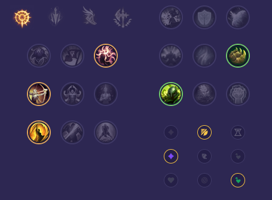

Starter: Ostrze Dorana Mikstura Zdrowia Core Bulid: Kosa Statikka Obuwie Merkurego Kolekcjoner Full Bulid: Ostrze Nieskończoności Pozdrowienia Lorda Dominika Ognista Armata

Słaby przeciwko: - Lux - Anivia - Irelia - Qiyana - Talon - Cassiopeia Dobry przeciwko: - Zed - Akali - Yone - Orianna - LeBlanc - Fizz